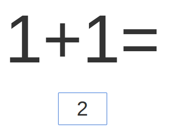

The test was developed by Dr. Yarden Gliksman from Ruppin Academic Center and prof. Avishai Henik from Ben Gurion University of the Negev.
During the test you will be presented with exercises on the screen. Your job will be to solve the exercises and type your answer quickly and without errors. Your computer will register your answers and response times. The length of the test is 3 minutes. By the end of the test your performance will be presented on the screen. You can export your results to an excel file and save it for your recoreds. Good Luck!
To confirm your participation please click
The screen below shows arithmetic exercises.
You need to solve them as quickly and accurately as possible
Type the answer in the space provided, then click 'Enter' to continue
To continue click
Here is an example, in the screen below you are asked to calculate the value of exercise 1 + 1.
The correct answer in this case is 2, this is presented in the answer box
In every trial of the experiment, you will get a similar screen; that is, an exercise and below it an answer box where you need to key in your response.

To start the experiment click